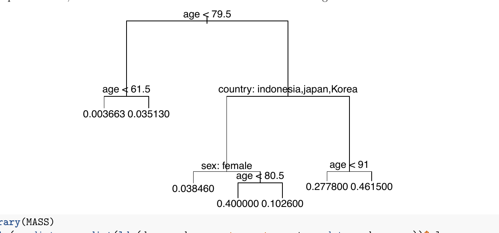
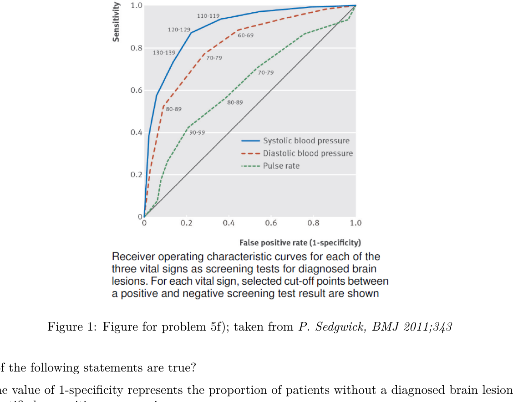
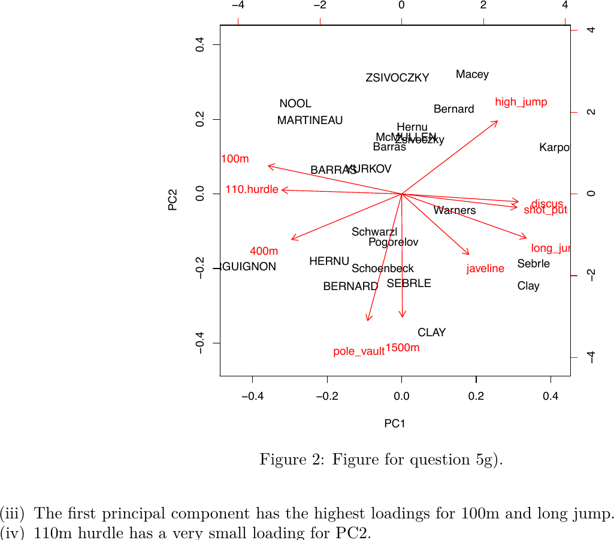

Multiple- and single-choice questions lifted verbatim from Compulsory Exercise 3 (TMA4268, V2020).
R-coding parts are excluded. Click an option to lock; explanations open automatically.
Score tracker bottom-left. Solutions adapted from the official solution PDF.
Question 12 pointsCE3 P2b
Answer the following multiple choice questions by using the Covid-19 data to model the probability of deceased as a function of sex, age and country (with France as reference level; no interactions). The fitted glm() output is shown below.
Which of the following statements are true, which false?
(i) Country is not a relevant variable in the model.
(ii) The slope for indonesia has a large $p$-value, which shows that we should remove the Indonesian population from the model, as they do not fit the model as well as the Japanese population.
(iii) Increasing the age by 10 years, $x^*_{age} = x_{age} + 10$, and holding all other covariates constant, the odds ratio to die increases by a factor of 1.97.
(iv) The probability to die is approximately 3.12 larger for males than for females.
Show answer
Solution: FALSE — FALSE — FALSE — FALSE.
False — an analysis of deviance test on the full model gives $p \approx 0.0002$ for country, so country is a relevant variable. A non-significant single dummy (Indonesia vs France) doesn't mean the whole factor is irrelevant.
False — a large $p$-value for one dummy level only means we have no evidence that that level differs from the reference; it is not a justification to drop a subpopulation from a model. You don't remove observations because their group is "not different from reference".
False — the calculation $\exp(10 \cdot \hat\beta_{age}) = \exp(10 \cdot 0.068) \approx 1.97$ is correct, but this is the multiplicative change in the odds, not in the odds ratio.
False — $\exp(\hat\beta_{sex}) = \exp(1.137) \approx 3.12$ is the odds ratio (males vs females), not the probability ratio.
Which of the following statements are true, which false?
Consider the classification tree below to answer:

Consider the LDA code and output below:
library(MASS)
table(predict = predict(lda(deceased ~ age + sex + country, data = d.corona))$class,
true = d.corona$deceased)
## true
## predict 0 1
## 0 1926 31
## 1 39 14
(i) The probability of dying (deceased = 1) is about 0.46 for a French person with age above 91.
(ii) Age seems to be a more important predictor for mortality than sex.
(iii) The "null rate" for misclassification is 2.24%, because this is the proportion of deaths among all cases in the dataset. No classifier should have a higher misclassification rate.
(iv) LDA is not a very useful method for this dataset, among other reasons because it does not estimate probabilities, but also because the misclassification error is too high.
Show answer
Solution: TRUE — TRUE — TRUE — FALSE.
Note from the official solution: statements (iii) and (iv) were later found to be ambiguous, so both True and False were graded as correct. Below is the most defensible reading.
True — follow the tree: age < 79.5 is False (age > 91), then country: indonesia,japan,Korea is False (French), then age < 91 is False. The terminal leaf reads 0.461500 ≈ 0.46.
True — age appears at the root and again deep in the tree, while sex appears only once (and as a tie-breaker in a single subtree). The classifier leans heavily on age.
True (most-defensible reading) — the null classifier "always predict 0 (alive)" misclassifies exactly the 45/2010 ≈ 2.24% who actually died. A useful classifier should beat this; LDA here gets $(39+31)/2010 \approx 3.48\%$, which is worse than the null. Officially graded ambiguous.
False — LDA does estimate (posterior) probabilities via Bayes' rule; that part of the statement is wrong. The misclassification claim is defensible (3.48% > 2.24% null), but the reason about probabilities is incorrect. Officially graded ambiguous.
Inference vs prediction: Which of the following methods are suitable when the aim of your analysis is inference?
(i) Lasso and ridge regression
(ii) Multiple linear regression with interaction terms
(iii) Logistic regression
(iv) Support Vector Machines
Show answer
Solution: TRUE — TRUE — TRUE — FALSE.
True — lasso and ridge yield interpretable coefficients on the original predictors; lasso additionally selects variables. Both are routinely used for inference, though SE/$p$-values require post-selection care.
True — coefficients of an MLR (including interaction terms) have direct interpretations and standard inferential tooling ($t$-tests, CIs, $F$-tests).
True — coefficients are log-odds with interpretable signs/magnitudes and standard Wald-type inference.
False — SVM is a black-box geometric classifier; it does not produce interpretable parameters and is not used for inference about effects.
We again look at the Covid-19 dataset from Problem 2 to study some properties of the bootstrap method. Below we estimated the standard errors of the regression coefficients in the logistic regression model with sex, age and country as predictors using 1000 bootstrap iterations (column std.error). These standard errors can be compared to those that we obtain by fitting a single logistic regression model using the glm() function. Look at the R output below and compare the standard errors that we obtain from these two approaches (note that the t1* to t6* variables are sorted in the same way as for the glm() output).
(i) There are large differences between the estimated standard errors, which indicates a problem with the bootstrap.
(ii) The differences between the estimated standard errors indicate a problem with the assumptions taken about the distribution of the estimated parameters in logistic regression.
(iii) The glm function leads to too small $p$-values for the differences between countries, in particular for the differences between Indonesia and France and between Japan and France.
(iv) The bootstrap relies on random sampling the same data without replacement.
Show answer
Solution: FALSE — TRUE — TRUE — FALSE.
False — bootstrap and glm SEs can differ; the bootstrap is treated as the more honest estimator (fewer parametric assumptions). A large gap is a signal about the parametric assumptions, not a problem with the bootstrap itself.
True — the glm SEs come from the asymptotic Wald approximation under specific distributional assumptions; when bootstrap SEs differ markedly (especially for countryindonesia and countryjapan, where bootstrap SE is many times larger), the Wald assumptions are suspect for those coefficients (small subgroup sizes, separation, etc.).
True — since the glm SEs for the Indonesia and Japan dummies are far smaller than the bootstrap SEs, the Wald $z = \hat\beta / \widehat{\text{SE}}$ is inflated and the resulting $p$-values are too small.
False — the bootstrap samples with replacement. "Without replacement" of the full $n$ would just return the original dataset.
False — forward/backward selection is a subset selection (variable-selection) technique, not a continuous shrinkage / regularization method.
True — SGD has an implicit regularization effect (especially with early stopping); in the neural-network context it is counted among regularization techniques the course covers.
In ridge regression, we estimate the regression coefficients in a linear regression model by minimizing
$$\sum_{i=1}^{n}\left(y_i - \beta_0 - \sum_{j=1}^{p}\beta_j x_{ij}\right)^2 + \lambda\sum_{j=1}^{p}\beta_j^2.$$
What happens when we increase $\lambda$ from 0? Choose the single correct statement:
A The training RSS will steadily decrease.
B The test RSS will steadily decrease.
C The test RSS will steadily increase.
D The bias will steadily increase.
E The variance of the estimator will steadily increase.
Show answer
Correct answer: D
D — at $\lambda = 0$ ridge is OLS (unbiased). As $\lambda$ grows the coefficients are shrunk toward zero, so bias grows monotonically; in the limit $\lambda \to \infty$ all $\hat\beta_j \to 0$ and bias is maximal.
A — training RSS increases with $\lambda$ (we're moving away from the OLS minimum of training RSS).
B and C — test RSS is U-shaped in $\lambda$: it typically decreases first, hits a minimum, then increases. Neither "steadily decrease" nor "steadily increase" is correct.
E — variance moves the opposite way: shrinkage reduces variance as $\lambda$ grows. That's exactly the bias–variance trade-off ridge exploits.
Which statement about the curse of dimensionality is correct?
A It means that we have a bias-variance tradeoff in $K$-nearest neighbor regression, where large $K$ leads to more bias but less variance for the predictor function.
B It means that the performance of the $K$-nearest neighbor classifier gets worse when the number of predictor variables $p$ is large.
C It means that the $K$-means clustering algorithm performs bad if the datapoints lie in a high-dimensional space.
D It means that support vector machines with radial kernel function should be avoided, because radial kernels correspond to infinite-dimensional polynomial boundaries.
E It means that we should never measure too many covariates when we want to do classification.
Show answer
Correct answer: B
B — in high dimensions, "nearest" neighbours are no longer near in any meaningful sense (points become roughly equidistant). KNN, which depends on local structure, degrades as $p$ grows.
A describes the bias–variance trade-off of KNN itself, not the curse of dimensionality.
C — the curse is a general high-dimensional phenomenon; it is not a property of $K$-means specifically.
D — wrong characterisation of radial kernels; radial-kernel SVMs are not generally avoided in high dimensions, and the reasoning given is not the curse.
E — a normative oversimplification: many covariates can be fine if local structure isn't required (linear models, trees with regularisation, etc.).
Now assume you have 10 covariates, $X_1$ to $X_{10}$, each of them uniformly distributed in the interval $[0, 1]$. To predict a new test observation $(X_1^{(0)}, \dots, X_{10}^{(0)})$ in a $K$-nearest neighbor (KNN) clustering approach, we use all observations within 20% of the range closest to each of the covariates (that is, in each dimension). Which proportion of available (training) observations can you expect to use for prediction?
A $1.02 \cdot 10^{-7}$
B $2.0 \cdot 10^{-3}$
C $0.20$
D $0.04$
E $10^{-10}$
Show answer
Correct answer: A
A — each covariate contributes an independent factor of $0.2$, so the hypercube fraction is $0.2^{10} = 1.024 \cdot 10^{-7}$. This is the canonical illustration of the curse of dimensionality.
B — $0.2^4 \approx 1.6\cdot 10^{-3}$; forgets six of the ten dimensions.
C — the per-dimension fraction (0.20). Ignores the product across dimensions entirely.
D — $0.2^2 = 0.04$; treats only two dimensions.
E — $0.1^{10}$; wrong base (uses 10% rather than 20%).
This example is taken from a real clinical study by Ikeda, Matsunaga, Irabu, et al. Using vital signs to diagnose impaired consciousness: cross sectional observational study. BMJ 2002;325:800. Researchers investigated the use of vital signs as a screening test to identify brain lesions in patients with impaired consciousness. The setting was an emergency department in Japan. The study included 529 consecutive patients that arrived with consciousness. Patients were followed until discharge. The vital signs of systolic and diastolic blood pressure and pulse rate were recorded on arrival. The aim of this study was to find a quick test for assessing whether the newly arrived patient suffered from a brain lesion. While vital signs can be measured immediately, the actual diagnosis of a brain lesion can only be determined on the basis of brain imaging and neurological examination at a later stage, thus the quick measurements of blood pressure and heart rate are important to make a quick assessment. In total, 312 patients (59%) were diagnosed with a brain lesion.
The performance of each vital sign (systolic blood pressure, diastolic blood pressure and heart rate) was separately evaluated as a screening test to quickly diagnose brain lesions. To assess the quality of each of these vital signs, different thresholds were taken successively to discriminate between "negative" and "positive" screening test result. For each vital sign and each threshold the sensitivity and specificity were derived and used to plot a receiver operating characteristic (ROC) curve for the vital sign (Figure 1):

Figure 1: Figure for problem 5f); taken from P. Sedgwick, BMJ 2011;343.
Which of the following statements are true?
(i) The value of 1-specificity represents the proportion of patients without a diagnosed brain lesion identified as positive on screening.
(ii) When we use different cut-offs, sensitivity increases at the cost of lower specificity, and vice versa.
(iii) A perfect diagnostic test has an AUC of 0.5.
(iv) The vital sign that is most suitable to distinguish between patients with and without brain lesion is systolic blood pressure.
Show answer
Solution: TRUE — TRUE — FALSE — TRUE.
True — specificity = $P(\text{neg test} \mid \text{no lesion})$, so $1 - \text{specificity}$ is the false-positive rate, i.e. the proportion of patients without a lesion that the test calls positive.
True — moving the threshold along the ROC curve trades sensitivity for specificity. That trade-off is exactly what the curve traces out.
False — a perfect test has AUC = 1 (the curve hugs the top-left corner). AUC = 0.5 corresponds to a useless test (the diagonal).
True — the systolic-blood-pressure curve sits highest and farthest from the diagonal in the figure, so it has the largest AUC and is the best discriminator.
We study the decathlon2 dataset from the factoextra package in R, where Athletes' performance during a sporting meeting was recorded. We look at 23 athletes and the results from the 10 disciplines in two competitions. Some rows of the dataset are displayed here:
From a principal component analysis we obtain the biplot given in Figure 2.

Figure 2: Figure for question 5g).
Which of the following statements are true, which false?
(i) The athlete named CLAY seems to be one of the fastest 1500m runners.
(ii) Athletes that are good in 100m tend to be also good in long jump.
(iii) The first principal component has the highest loadings for 100m and long jump.
(iv) 110m hurdle has a very small loading for PC2.
Show answer
Solution: FALSE — TRUE — TRUE — TRUE.
False — CLAY sits at a negative PC2 value, and 1500m's PC2 loading is also negative. Two negatives align, so CLAY's projected 1500m time is large — i.e. CLAY runs slow, not fast.
True — 100m and long_jump arrows lie along the same PC1 axis (in opposite directions, because low 100m times go with high long-jump distances). Athletes scoring high on this axis tend to excel at both.
True — in absolute value, the PC1 loadings for 100m and long_jump are the largest in the biplot.
True — the 110.hurdle arrow is almost parallel to PC1, so its PC2 component is close to zero.